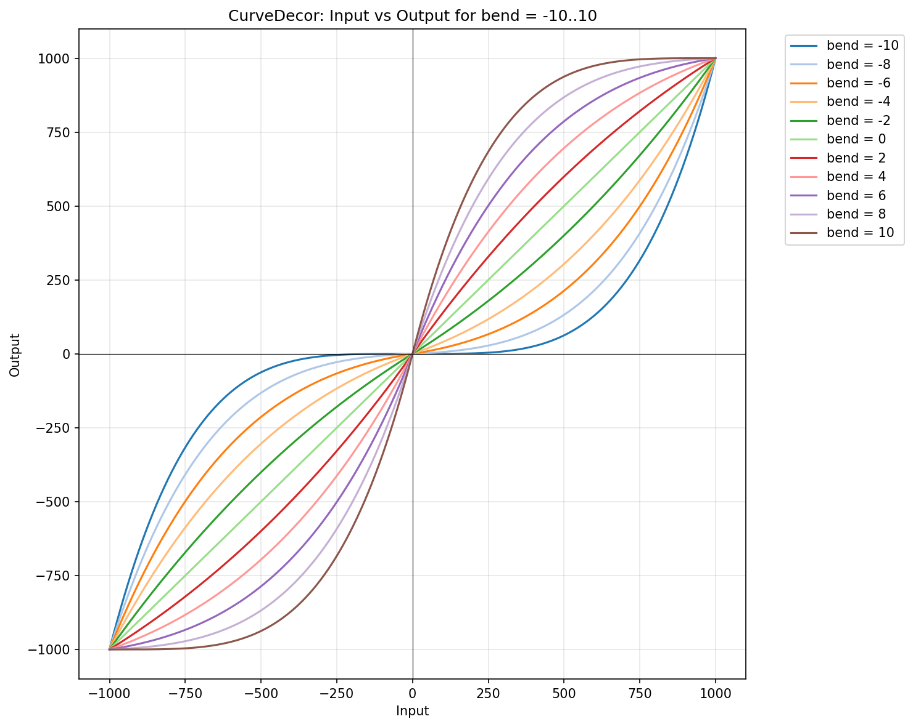

Decorators¶
Decorators add behavioral features to motors by wrapping them. Multiple decorators can be stacked to combine features.
CurveDecor – Non-linear Response¶
Converts linear input into an S-shaped curve.

Applying to Motors: Negative bend values create a softer response at low speeds (finer control) with steeper response at high speeds. Positive bend values create sharper initial response with compressed high-end.
template <class Motor, signed short kBend = 0>
class CurveDecor : public Motor
Parameters:
kBend: -10..10 (0 = linear, positive = precise low-speed control, negative = aggressive start)
Methods:
-
SetBend(value)– Set bend at runtime -
Go(value)– Apply curved transformation
Example:
// Precise low-speed control with strong high-end response
using PreciseMotor = evam::CurveDecor<evam::DirectionalMotor<evam::TA6586Driver<9, 10>>, -6>;
PreciseMotor motor;
// Gentle reaction at low-speed
motor.Go(150);
motor.Go(200);
// Strong reaction at high speeds
motor.Go(750);
motor.Go(800);
Use cases:
-
Camera gimbals requiring smooth micro-adjustments
-
Precision positioning systems
-
Vehicles needing both crawling speed control and full power
-
CNC machines with fine feed control
InertiaDecor – Flywheel Effect¶
Simulates mechanical inertia where speed decreases gradually when stopping. Acceleration and direction changes are applied immediately, but deceleration follows an exponential decay curve.
template <class Motor, unsigned short kInertiaMass = 10>
class InertiaDecor : public virtual Tickable, public Motor
Requirements:
Acording EVA principle must call eva::tac() in loop() to drive the deceleration updates.
Parameters:
kInertiaMass: 1..200 (higher = slower deceleration)
Methods:
-
SetInertiaMass(value)– Set virtual mass (1..200) -
Go(speed)– Apply speed with inertia simulation
Example:
using InertialMotor = evam::InertiaDecor<evam::DirectionalMotor<evam::TA6586Driver<9, 10>>, 20>;
InertialMotor motor;
motor.SetInertiaMass(25);
motor.Go(800); // Accelerate
motor.Go(0); // Gradual deceleration
Behavior:
-
Small mass (1-10): Quick stops, responsive
-
Medium mass (11-30): Realistic car-like behavior
-
Large mass (31-200): Heavy flywheel, slow deceleration
Use-case:
For extremely high transmission ratios (e.g., geared motors with high reduction), consider using higher inertia mass values to compensate for the mechanical advantage and gear train inertia.
KickDecor – Static Friction Overcome¶
Applies a momentary power pulse when starting from stop or changing direction to overcome static friction and inertia.
template <class Motor, unsigned short kKickDuration = 20, signed short kKickPower = 1000>
class KickDecor : public virtual Tickable, public Motor
Requirements:
Must call eva::tac() in loop() to manage kick pulse timing.
Parameters:
-
kKickDuration: Pulse duration in milliseconds (> 0) -
kKickPower: Pulse power (-1000..1000)
Methods:
-
SetupKickstart(duration, power)– Configure kick parameters -
SetKickDuration(value)– Set pulse duration -
SetKickPower(value)– Set pulse power -
Go(value)– Apply with kick-start when needed
Example:
using KickerMotor = evam::KickDecor<evam::DirectionalMotor<evam::TA6586Driver<9, 10>>, 30, 900>;
KickerMotor motor;
motor.SetupKickstart(25, 800); // 25ms pulse at 80% power
motor.Go(300); // Kick then maintain 30% power
Kick Logic:
-
From stop to forward: Applies positive kick pulse
-
From stop to reverse: Applies negative kick pulse
-
Direction change: Applies kick in new direction
-
Already moving: No kick, direct control
Combining Decorators¶
Decorators can be stacked in any order to achieve complex behaviors:
#include <evaTac.h>
#include <evamTA6586Driver.h>
#include <evamDirectionalMotor.h>
#include <evamCurveDecor.h>
#include <evamInertiaDecor.h>
#include <evamKickDecor.h>
using namespace eva;
// Stack all three decorators
using BaseMotor = evam::DirectionalMotor<evam::TA6586Driver<9, 10>>;
using PreciseMotor = evam::CurveDecor<BaseMotor, 5>;
using InertialMotor = evam::InertiaDecor<PreciseMotor, 15>;
using SmartMotor = evam::KickDecor<InertialMotor, 25, 900>;
SmartMotor motor;
void setup() {
motor.SetupRange(-1000, -200, 200, 1000);
motor.SetBend(6);
motor.SetInertiaMass(20);
motor.SetupKickstart(30, 850);
motor.Go(800); // All decorators applied
}
void loop() {
eva::tac();
}
Order Effects:
-
Curve before Inertia: Precise low-speed shaping, then inertia applied to smooth signal
-
Inertia before Curve: Inertia on raw signal, then curve shapes the result
-
Kick at any level: Always applied at appropriate layer
Performance Considerations¶
-
InertiaDecor and KickDecor require
eva::tac()calls for timing -
All decorators add minimal overhead (inline templates)
-
Multiple decorators compile to single optimized function chain
-
No runtime polymorphism overhead